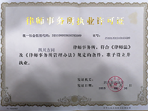

刑事辩护：过失致人死亡，应当如何判决？
根据法律规定，辩护人的责任是根据事实和法律，提出证明犯罪嫌疑人、被告人无罪、罪轻或者减轻、免除其刑事责任的材料和意见，维护犯罪嫌疑人、被告人的合法权益。所以，作为被告人的辩护人，最大限度地维护他的合法权益，为他争取最轻的处罚是我们的职责所在。从被告人的亲属向我们讲述的他从不同侧面了解到的一些情况来看，有些情况与起诉书指控的事实有不小的出入。本案办理过程中，辩护人先后五次到看守所会见被告人。
律师认为案发后，取得被害人家属谅解是辩护的关键，所以泰仁律师主动联系了被害人家属作了经济赔偿，取得了家属的谅解书。
开庭时辩护人对被告人郝某在开庭审理过程中亦无异议，并有证人解天平、杨光情、谢天军的证言笔录，辨认笔录及照片，某市公安局某分局的现场勘查笔录，照片，现场图，道路交通事故现场图、案发经过，某市公安局物证鉴定中心的法医学尸体检验鉴定书，某市道路交通事故鉴定中心的检验报告书、鉴定书，交通事故损害赔偿调解书，收据，收条，驾驶证、行驶证复印件，“110”接警登记表，被告人的户籍资料等证据证实，足以认定。
然而辩护人认为被告人郝某犯罪后认罪态度较好，具有自首情节，且已向被害人家属作出经济赔偿，可以适用缓刑。

根据法律规定，辩护人的责任是根据事实和法律，提出证明犯罪嫌疑人、被告人无罪、罪轻或者减轻、免除其刑事责任的材料和意见，维护犯罪嫌疑人、被告人的合法权益。所以，作为被告人的辩护人，最大限度地维护他的合法权益，为他争取最轻的处罚是我们的职责所在。从被告人的亲属向我们讲述的他从不同侧面了解到的一些情况来看，有些情况与起诉书指控的事实有不小的出入。本案办理过程中，辩护人先后五次到看守所会见被告人。
律师认为案发后，取得被害人家属谅解是辩护的关键，所以泰仁律师主动联系了被害人家属作了经济赔偿，取得了家属的谅解书。
开庭时辩护人对被告人郝某在开庭审理过程中亦无异议，并有证人解天平、杨光情、谢天军的证言笔录，辨认笔录及照片，某市公安局某分局的现场勘查笔录，照片，现场图，道路交通事故现场图、案发经过，某市公安局物证鉴定中心的法医学尸体检验鉴定书，某市道路交通事故鉴定中心的检验报告书、鉴定书，交通事故损害赔偿调解书，收据，收条，驾驶证、行驶证复印件，“110”接警登记表，被告人的户籍资料等证据证实，足以认定。
然而辩护人认为被告人郝某犯罪后认罪态度较好，具有自首情节，且已向被害人家属作出经济赔偿，可以适用缓刑。